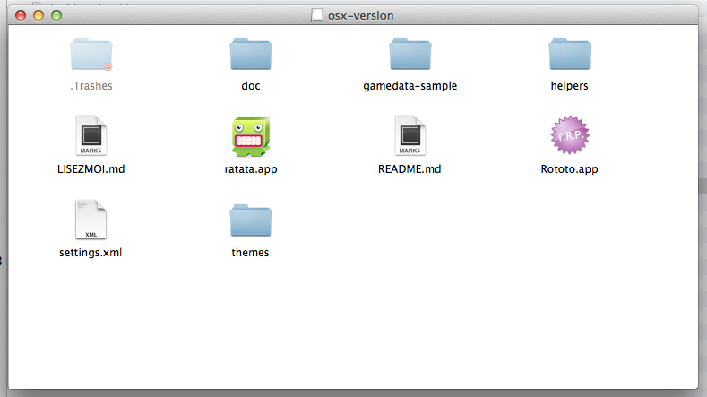

install¶
T.R.P. don’t really need to be “installed”.
OSX¶
Under OSX, T.R.P. comes as a disk image (dmg file). Just click on this dmg file to mount it. You will see something like this
Copy everything to a location of your choice Launch Rototo just to see the samples.
Windows¶
On Windows, T.R.P. comes as a zip file. Copy the content of the zip file to a location of your choice Launch Rototo just to see the samples.
However, it comes with a set of tools which, in turn, need to be. These tools are optional but T.R.P. was thought to use them. So your life will be much simpler if you do;-)
ShoeBox¶
Shoebox is a freeware tool(made with the Adobe Air SDK) for generating sprites sheets. T.R.P. use it a lot for sprites and animations.
To install it, you must first install the adobe air environment (if you don’t already have it of course) Just go to
` Get Adobe Air <http://get.adobe.com/fr/air/>`_
and follow the instructions.
When the air environment is installed , take a version of Shoebox directly on the ShoeBox’s website :
Tiled¶
Tiled is a well known tile editor. If you want to do a tile based game or just instantiate 2d objects with Tiled, take a version of Tiled directly on their website :
Configuration¶
You can edit the file settings.xml to configure T.R.P. For example, you can set the initial position of the window, it’s scale, the default text editor, etc...
win32 sample
<settings>
<position x = "50" y = "100"/>
<size w = "768" h="576"/>
<editor url="D:\tools\Sublime Text Build 3 3021 x64\sublime_text.exe" args="%s:%d:%d"/>
<datafolder directory="gamedata-shooter"/>
<autorestart value="0"/>
<allowdebug value="1"/>
<verbose value="0"/>
<logtofile value="1"/>
<server ip="192.168.0.1"/>
</settings>
OSX Sample
<settings>
<position x = "50" y = "100"/>
<size w = "768" h="576"/>
<editor url="/usr/local/bin/subl" args="%s:%d:%d"/>
<datafolder directory="mygamedata"/>
<autorestart value="1"/>
<allowdebug value="0"/>
<verbose value="0"/>
<logtofile value="1"/>
<server ip="192.168.0.1"/>
</settings>
Here are the different options available :
- position : window’s position in screen coordinates
- size : window’s size in screen coordinates
- editor : url of your favorite text editor
- datafolder : folder name of your gamedata.
- autorestart : if value != 0 T.R.P. will restart automatically if the gamedata folder changed (add/modify/remove files)
- allowdebug : if value != 0 you can attach a debugger
- verbose : Set T.R.P. in verbose mode or not
- logtofile : Every T.R.P. log is written to a file called trp.log
- server : IP Address of the T.R.P. server (only if you want to connect to it as a client)
Keyboard Shortcuts¶
- Ctrl-R : restart
- Ctrl-F : Open the explorer (or Finder) into the script directory
- Ctrl-H : Open the HTML Help File
How to see Debug Logs¶
With Ratata¶
Simply open Ratata and connect it to Rototo. Then go to the console widget to see your logs.
Without Ratata - Pro way¶
If you want to see all logs (included TRP internal logs), the best option is to see OutputDebugString (and eventually turn on the verbose mode)
- Under Windows
Use the application Dbgview.exe located in the Tools directory
- Under OSX
Use the OSX Console Application located in Utility/Console.